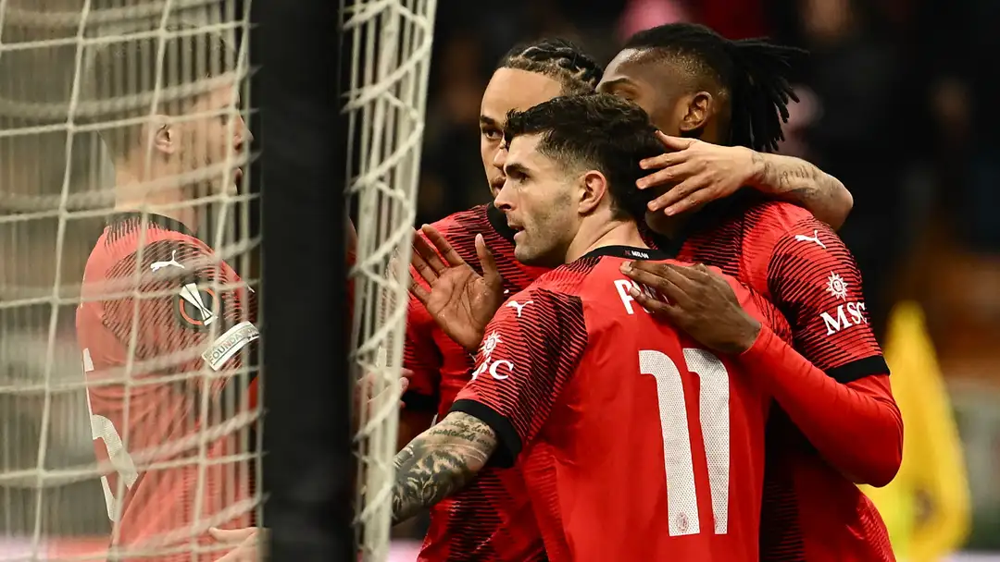

Christian Pulisic the menace! USMNT star nets late dagger and draws crucial red card in AC Milan's Europa League win over Slavia Prague
Christian Pulisic scored a goal and drew a red card against Slavia Prague as AC Milan seized a first-leg advantage in the Europa League.
It was a chaotic affair, which certainly wasn't what Milan were going for. What could have, and probably should have, been a relatively straightforward win turned into a battle that nearly set up a fierce second leg.
That scoreline papered over a performance that, in truth, left something to be desired, such were their defensive deficiencies.
After a tense start, the game totally opened up in the 24th minute when Malick Diouf was sent off for a studs-up tackle on Pulisic. Olivier Giroud scored shortly after for Milan, but the lead lasted just two minutes before David Doudera scored a stunner for the guests to level things at 1-1.
Milan, though, appeared to put things to bed before halftime. Tijani Reijnders restored the advantage in the 44th minute before Ruben Loftus-Cheek scored in the first minute of first-half stoppage time, sending Milan to the break with a 3-1 lead - and a man advantage.